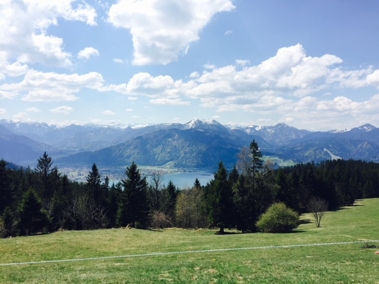

Experience and Education
(Hover over the maps!)
- Analysed high volumes of sequencing data from online databases and for collaborating groups
- Launched and maintained a web-based analysis platform with interactive visualisations for expression data
- Designed analysis workflows for an online cancer database
- Organised a 2-day symposium for life scientists in Munich
- Analysed expression and methylation data of human liver cancer and a mouse cancer model
- Performed clustering analysis to identify groups of cancer
- Graduated with Distinction
- Created a visualisation plug-in for ChIP-seq Data in an enterprise-scale data resource
- Gained expertise in molecular biology and imaging techniques
- Designed and conducted multiple experimental, animal and clinical research projects
- Performed statistical analysis on experimental and clinical research data
- Coordinated with local medical staff to collect patients' sample
- Cultured cells for molecular biology experiments
Europe
Asia
Skills and Languages
Programming
| Python | |
Advanced |
|
| SQL | |
Advanced |
|
| Javascript | |
Intermediate |
|
| R | |
Advanced |
Languages
| English | |
Fluent |
|
| Chinese | |
Fluent |
|
| German | |
Intermediate (B1/B2) |
Other Skills
Exploratory Data Analysis
Data Visualization
d3.js
Tableau
Machine Learning scikit-learn keras
Hadoop Spark Scala
HTML/CSS PHP R Bioconductor
Machine Learning scikit-learn keras
Hadoop Spark Scala
HTML/CSS PHP R Bioconductor
Courses Attended
MOOCs
Specialization in Deep Learning (5 courses)
deeplearning.ai, on Coursera
- Neural Networks and Deep Learning
- Improving Deep Neural Networks: Hyperparameter tuning, Regularization and Optimization
- Structuring Machine Learning Projects
- Convolutional Neural Networks
- Sequence Models
Big Data Analysis with Scala and Spark
École Polytechnique Fédérale de Lausanne, on Coursera
Workshops
Data Analysis with R (3-day Workshop)
Science Craft
Scientific Writing (3-day Workshop)
Science Craft
Portfolio

Publications and Awards
Publications
MitoXplorer - A Visualization Approach to Investigate Mitochondrial Functions in Aneuploidy Cells with RNA-seq Data
Yim, A. P.; Koti, P.; Dürrbaum, M. et al. (Manuscript in preparation)
Hypermethylation of gene body CpG islands predicts high dosage of functional oncogenes in liver cancer.
Arechederra, M.; Daian, F.; Yim, A. P. et al. Nature Commun. (Publication in process)
Integrative analysis and machine learning on cancer genomics data using the Cancer Systems Biology Database (CancerSysDB).
Krempel, R.; Kulkarni, P.; Yim, A. P. et al. BMC Bioinformatics. 2018; 19 (1): pp.156
Abnormal Skeletal Growth in Adolescent Idiopathic Scoliosis Is Associated with Abnormal Quantitative Expression of Melatonin Receptor, MT2.
Yim, A. P.; Yeung, H. Y.; Sun, G. et al. Int J Mol Sci. 2013; 14 (3): pp.6345-58
Abnormal skeletal growth patterns in adolescent idiopathic scoliosis-a longitudinal study until skeletal maturity.
Yim, A. P.; Yeung, H. Y.; Hung, V. W. et al. Spine (Phila Pa 1976). 2012; 37 (18): pp.E1148-54
Fellowships and Awards
Best Poster Award at 16th Asia Pacific Bioinformatics Conference, Yokohama, Japan (2018)
ERAMUS+ Internship Program for Higher Education Students, Marseille, France (2018)
PhD Program of International Max Planck Research School for Molecular Life Sciences, Munich, Germany (2014 - 2018)
Postgraduate Studentship from The Chinese University of Hong Kong, Hong Kong (2009 - 2011)
Interests
Hiking
Snowboarding
Cycling
Grainau
Garmisch-Partenkirchen, Germany
Gellért Hill
Budapest, Hungary

Sächsischen Schweiz National Park
Saxony, Germany
Lokrum
Dubrovnik, Croatia
Eibsee
Garmisch-Partenkirchen, Germany
Kochel am See
Bad-Tolz, Germany
National Park of Calanques
Marseille, France
Letna Park
Prague, Czech Republic

Tegernsee
Tegernsee
Germany

Get in Touch
I'm currently seeking opportunities to leverage my skills and challenge myself with some really exciting projects! Feel like we could be a good match?
Drop me a line at anniepyim@gmail.com or send me message on LinkedIn!